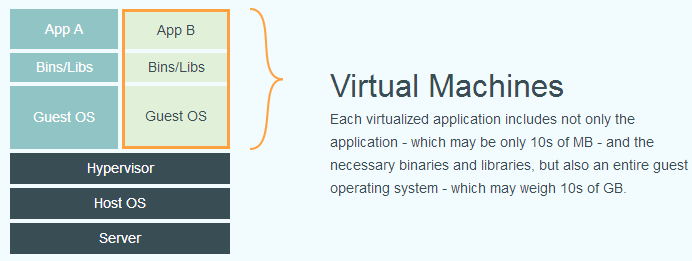
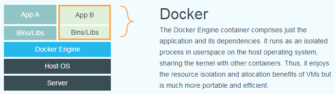

Docker 简介
什么是 Docker
Docker 最初是 dotCloud 公司创始人 Solomon Hykes 在法国期间发起的一个公司内部项目，它是基于 dotCloud 公司多年云服务技术的一次革新，并于 [2013 年 3 月以 Apache 2.0 授权协议开源][docker-soft]，主要项目代码在 GitHub 上进行维护。Docker 项目后来还加入了 Linux 基金会，并成立推动 开放容器联盟（OCI）。
Docker 自开源后受到广泛的关注和讨论，至今其 GitHub 项目 已经超过 5 万 7 千个星标和一万多个 fork。甚至由于 Docker 项目的火爆，在 2013 年底，dotCloud 公司决定改名为 Docker。Docker 最初是在 Ubuntu 12.04 上开发实现的；Red Hat 则从 RHEL 6.5 开始对 Docker 进行支持；Google 也在其 PaaS 产品中广泛应用 Docker。
Docker 使用 Google 公司推出的 Go 语言 进行开发实现，基于 Linux 内核的 cgroup，namespace，以及 OverlayFS 类的 Union FS 等技术，对进程进行封装隔离，属于 操作系统层面的虚拟化技术。由于隔离的进程独立于宿主和其它的隔离的进程，因此也称其为容器。最初实现是基于 LXC，从 0.7 版本以后开始去除 LXC，转而使用自行开发的 libcontainer，从 1.11 版本开始，则进一步演进为使用 runC 和 containerd。

runc是一个 Linux 命令行工具，用于根据 OCI容器运行时规范 创建和运行容器。
containerd是一个守护程序，它管理容器生命周期，提供了在一个节点上执行容器和管理镜像的最小功能集。
Docker 在容器的基础上，进行了进一步的封装，从文件系统、网络互联到进程隔离等等，极大的简化了容器的创建和维护。使得 Docker 技术比虚拟机技术更为轻便、快捷。
下面的图片比较了 Docker 和传统虚拟化方式的不同之处。传统虚拟机技术是虚拟出一套硬件后，在其上运行一个完整操作系统，在该系统上再运行所需应用进程；而容器内的应用进程直接运行于宿主的内核，容器内没有自己的内核，而且也没有进行硬件虚拟。因此容器要比传统虚拟机更为轻便。


为什么要使用 Docker？
作为一种新兴的虚拟化方式，Docker 跟传统的虚拟化方式相比具有众多的优势。
更高效的利用系统资源
由于容器不需要进行硬件虚拟以及运行完整操作系统等额外开销，Docker 对系统资源的利用率更高。无论是应用执行速度、内存损耗或者文件存储速度，都要比传统虚拟机技术更高效。因此，相比虚拟机技术，一个相同配置的主机，往往可以运行更多数量的应用。
更快速的启动时间
传统的虚拟机技术启动应用服务往往需要数分钟，而 Docker 容器应用，由于直接运行于宿主内核，无需启动完整的操作系统，因此可以做到秒级、甚至毫秒级的启动时间。大大的节约了开发、测试、部署的时间。
一致的运行环境
开发过程中一个常见的问题是环境一致性问题。由于开发环境、测试环境、生产环境不一致，导致有些 bug 并未在开发过程中被发现。而 Docker 的镜像提供了除内核外完整的运行时环境，确保了应用运行环境一致性，从而不会再出现 「这段代码在我机器上没问题啊」 这类问题。
持续交付和部署
对开发和运维（DevOps）人员来说，最希望的就是一次创建或配置，可以在任意地方正常运行。
使用 Docker 可以通过定制应用镜像来实现持续集成、持续交付、部署。开发人员可以通过 Dockerfile 来进行镜像构建，并结合 持续集成(Continuous Integration) 系统进行集成测试，而运维人员则可以直接在生产环境中快速部署该镜像，甚至结合 持续部署(Continuous Delivery/Deployment) 系统进行自动部署。
而且使用 Dockerfile 使镜像构建透明化，不仅仅开发团队可以理解应用运行环境，也方便运维团队理解应用运行所需条件，帮助更好的生产环境中部署该镜像。
更轻松的迁移
由于 Docker 确保了执行环境的一致性，使得应用的迁移更加容易。Docker 可以在很多平台上运行，无论是物理机、虚拟机、公有云、私有云，甚至是笔记本，其运行结果是一致的。因此用户可以很轻易的将在一个平台上运行的应用，迁移到另一个平台上，而不用担心运行环境的变化导致应用无法正常运行的情况。
更轻松的维护和扩展
Docker 使用的分层存储以及镜像的技术，使得应用重复部分的复用更为容易，也使得应用的维护更新更加简单，基于基础镜像进一步扩展镜像也变得非常简单。此外，Docker 团队同各个开源项目团队一起维护了一大批高质量的 官方镜像，既可以直接在生产环境使用，又可以作为基础进一步定制，大大的降低了应用服务的镜像制作成本。
对比传统虚拟机总结
| 特性 | 容器 | 虚拟机 |
|---|---|---|
| 启动 | 秒级 | 分钟级 |
| 硬盘使用 | 一般为 MB |
一般为 GB |
| 性能 | 接近原生 | 弱于 |
| 系统支持量 | 单机支持上千个容器 | 一般几十个 |
引用链接
[1] Solomon Hykes: https://github.com/shykes[2] GitHub: https://github.com/moby/moby[3] 开放容器联盟（OCI）: https://opencontainers.org/[4] GitHub 项目: https://github.com/moby/moby[5] dotCloud 公司决定改名为 Docker: https://www.docker.com/blog/dotcloud-is-becoming-docker-inc/[6] Go 语言: https://golang.google.cn/[7] cgroup: https://zh.wikipedia.org/wiki/Cgroups[8] namespace: https://en.wikipedia.org/wiki/Linux_namespaces[9] OverlayFS: https://docs.docker.com/storage/storagedriver/overlayfs-driver/[10] Union FS: https://en.wikipedia.org/wiki/Union_mount[11] 操作系统层面的虚拟化技术: https://en.wikipedia.org/wiki/Operating-system-level_virtualization[12] LXC: https://linuxcontainers.org/lxc/introduction/[13] libcontainer: https://github.com/docker/libcontainer[14] runC: https://github.com/opencontainers/runc[15] containerd: https://github.com/containerd/containerd[16] OCI容器运行时规范: https://github.com/opencontainers/runtime-spec[17] DevOps: https://zh.wikipedia.org/wiki/DevOps[18] Dockerfile: ../image/dockerfile/[19] 持续集成(Continuous Integration): https://en.wikipedia.org/wiki/Continuous_integration[20] 持续部署(Continuous Delivery/Deployment): https://en.wikipedia.org/wiki/Continuous_delivery[21] `Dockerfile`: ../image/build.md[22] 官方镜像: https://hub.docker.com/search/?type=image&image_filter=official